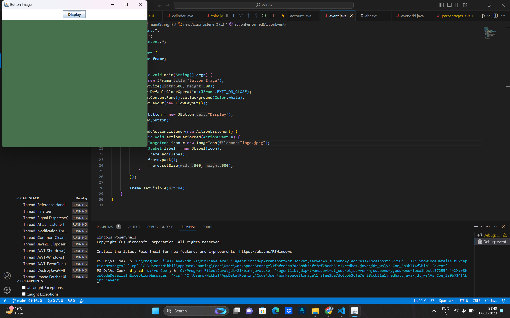

3. Java Program to Create a Button and Display Image in the Frame when Clicked
import javax.swing.*;
import java.awt.*;
import java.awt.event.*;
public class event {
static JFrame frame;
public static void main(String[] args) {
frame = new JFrame("Button Image");
frame.setSize(500, 500);
frame.setDefaultCloseOperation(JFrame.EXIT_ON_CLOSE);
frame.getContentPane().setBackground(Color.white);
frame.setLayout(new FlowLayout());
JButton button = new JButton("Display");
frame.add(button);
button.addActionListener(new ActionListener() {
public void actionPerformed(ActionEvent e) {
ImageIcon icon = new ImageIcon("logo.jpeg");
JLabel label = new JLabel(icon);
frame.add(label);
frame.pack();
frame.setSize(500, 500);
}
});
frame.setVisible(true);
}
}
Output

5. Java Program to Handle KeyBoardEvent
// Java Program to Handle KeyBoardEvent
import java.awt.*;
import java.awt.event.*;
class Main implements KeyListener {
static Frame frame;
static TextField tf1;
static TextField tf2;
// Driver function
public static void main(String args[]) {
frame = new Frame("Keyboard Event");
frame.setSize(500, 500);
frame.setLayout(null);
tf1 = new TextField();
tf1.setBounds(150, 100, 500, 50);
tf2 = new TextField();
tf2.setBounds(140, 400, 500, 50);
Main obj = new Main();
tf2.addKeyListener(obj);
frame.addWindowListener(new WindowAdapter() {
public void windowClosing(WindowEvent w) {
frame.dispose();
}
});
frame.setVisible(true);
frame.add(tf1);
frame.add(tf2);
}
public void keyReleased(KeyEvent e) {
tf1.setText("");
tf1.setText("Key Released : " + e.getKeyCode());
System.out.println("Key Released");
}
// function to display the unicode of key pressed and the character if it is a letter or a digit
public void keyPressed(KeyEvent e) {
tf1.setText("");
tf1.setText("Key Pressed : " + e.getKeyCode());
System.out.println("Key Pressed");
}
// function to display the character of the key typed
public void keyTyped(KeyEvent e) {
tf1.setText("");
tf1.setText("Key Typed : " + e.getKeyChar());
System.out.println("Key Typed");
}
}
Output

4. Java Program to Create 2 Radio Buttons and Display Selected Button Label
import javax.swing.*;
import java.awt.*;
import java.awt.event.*;
class Radio_Button implements ActionListener
{
static JRadioButton yes;
static JRadioButton no;
static JTextField text;
public static void main(String args[])
{
//Create a frame
JFrame frame=new JFrame("Radio Button");
frame.setSize(500,500);
frame.setLayout(null);
frame.setBackground(Color.white);
frame.setDefaultCloseOperation(JFrame.EXIT_ON_CLOSE);
text=new JTextField();
text.setBounds(0,0,500,50);
frame.add(text);
yes=new JRadioButton("Yes");
no=new JRadioButton("No");
yes.setBounds(210,100,80,60);
no.setBounds(210,200,80,60);
frame.add(yes);
frame.add(no);
Radio_Button obj=new Radio_Button();
yes.addActionListener(obj);
no.addActionListener(obj);
//Display the frame
frame.setVisible(true);
}
public void actionPerformed(ActionEvent e)
{
String b=e.getActionCommand();
if(b.equals("Yes"))
{
if(no.isSelected())
no.setSelected(false);
}
else
{
if(yes.isSelected())
yes.setSelected(false);
}
text.setText("Label of Button Selected : "+b);
}
}
Output

7. Java Program to Get and Set State and Get Label of a Check Box
import javax.swing.*;
import java.awt.*;
import java.awt.event.*;
class Check_Box implements ActionListener
{
static JTextField text;
static Checkbox checkbox;
public static void main(String args[])
{
//Create a frame
JFrame frame=new JFrame("Check Box");
frame.setSize(500,500);
frame.setBackground(Color.white);
frame.setLayout(null);
frame.setDefaultCloseOperation(JFrame.EXIT_ON_CLOSE);
text=new JTextField();
text.setBounds(0,0,500,50);
frame.add(text);
JButton get_st=new JButton("Get State");
JButton set_st=new JButton("Set State");
JButton get_lb=new JButton("Get Label");
get_st.setBounds(50,80,100,50);
set_st.setBounds(180,80,100,50);
get_lb.setBounds(310,80,100,50);
frame.add(get_st);
frame.add(set_st);
frame.add(get_lb);
Check_Box obj=new Check_Box();
get_st.addActionListener(obj);
set_st.addActionListener(obj);
get_lb.addActionListener(obj);
checkbox=new Checkbox("Sample Checkbox");
checkbox.setBounds(150,200,200,80);
frame.add(checkbox);
//Display the frame
frame.setVisible(true);
}
@Override
public void actionPerformed(ActionEvent e)
{
String option=e.getActionCommand();
if(option.equals("Get State"))
get_State();
else if(option.equals("Set State"))
set_State();
else
get_Label();
}
public void get_State()
{
boolean state=checkbox.getState();
if(state==true)
text.setText("State of Checkbox : Checked");
else
text.setText("State of Checkbox : Un-Checked");
}
public void set_State()
{
text.setText("State of Checkbox changed from ");
boolean state=checkbox.getState();
if(state==true)
{
checkbox.setState(false);
text.setText(text.getText()+"Checked to Un-Checked");
}
else
{
checkbox.setState(true);
text.setText(text.getText()+"Un-Checked to Checked");
}
}
public void get_Label()
{
text.setText("Label of the checkbox is : ");
text.setText(text.getText()+checkbox.getLabel());
}
}
Output

8. Java Program to Create Check Boxes and Radio Buttons
import javax.swing.*;
import java.awt.*;
import java.awt.event.*;
class Button_Checkbox implements ActionListener,ItemListener
{
static JFrame frame;
static JLabel text1,text2;
static JCheckBox[] checkbox;
static JRadioButton[] button;
public static void main(String args[])
{
frame=new JFrame("Buttons & Checkboxes");
frame.setSize(600,600);
frame.setLayout(null);
frame.setDefaultCloseOperation(JFrame.EXIT_ON_CLOSE);
frame.getContentPane().setBackground(Color.white);
text1=new JLabel("");
text1.setBounds(0,450,600,50);
frame.add(text1);
text2=new JLabel("");
text2.setBounds(0,500,600,50);
frame.add(text2);
Button_Checkbox obj=new Button_Checkbox();
button=new JRadioButton[3];
for(int i=0;i< 3;i++)
{
button[i]=new JRadioButton("Button "+(i+1));
button[i].setBounds(200,i*80,100,50);
frame.add(button[i]);
button[i].addActionListener(obj);
}
checkbox=new JCheckBox[3];
for(int i=0;i< 3;i++)
{
checkbox[i]=new JCheckBox("Checkbox"+(i+1));
checkbox[i].setBounds(220,(240)+i*80,100,50);
frame.add(checkbox[i]);
checkbox[i].addItemListener(obj);
}
frame.setVisible(true);
}
public void actionPerformed(ActionEvent e)
{
String s="";
for(int i=0;i < 3;i++)
{
if(button[i].isSelected())
s=s+" "+button[i].getText();
}
text1.setText("Button(s) Selected : "+" "+s);
}
public void itemStateChanged(ItemEvent e)
{
String s="";
for(int i=0;i< 3;i++)
{
if(checkbox[i].isSelected())
s=s+" "+checkbox[i].getText();
}
text2.setText("Checkbox(s) Selected : "+s);
}
}
Output

12. Java Program to Display a Message in a New Frame
import javax.swing.*;
import java.awt.event.*;
import java.awt.*;
class Message implements ActionListener
{
public static void main(String args[])
{
JFrame frame = new JFrame("Original Frame");
frame.setSize(300,300);
frame.setDefaultCloseOperation(JFrame.EXIT_ON_CLOSE);
Message obj = new Message();
JButton button = new JButton("View Message");
frame.add(button);
button.addActionListener(obj);
frame.setVisible(true);
}
public void actionPerformed(ActionEvent e)
{
JFrame sub_frame = new JFrame("Sub Frame");
sub_frame.setSize(200,200);
JLabel label = new JLabel("!!! Hello !!!");
sub_frame.add(label);
sub_frame.setVisible(true);
}
}
Output
13. Java Program to Close the Frame using WindowAdapter Class
import javax.swing.*;
import java.awt.*;
import java.awt.event.*;
class Window_Adapter extends WindowAdapter
{
static JFrame frame;
public static void main(String args[])
{
frame=new JFrame("Window Adapter Class");
frame.setBackground(Color.white);
frame.setSize(500,500);
Window_Adapter obj=new Window_Adapter();
frame.addWindowListener(obj);
frame.setVisible(true);
}
@Override
public void windowClosing(WindowEvent e)
{
System.out.println("Status of frame : Closing");
windowClosed(e);
}
@Override
public void windowClosed(WindowEvent e)
{
frame.dispose();
}
@Override
public void windowIconified(WindowEvent e)
{
System.out.println("Status of frame : Iconified");
}
@Override
public void windowDeiconified(WindowEvent e)
{
System.out.println("Status of frame : Deiconfied");
}
@Override
public void windowActivated(WindowEvent e)
{
System.out.println("Status of frame : Activated");
}
@Override
public void windowDeactivated(WindowEvent e)
{
System.out.println("Status of frame : Deactivated");
}
@Override
public void windowOpened(WindowEvent e)
{
System.out.println("Status of frame : Opened");
}
}
Output

14. Java Program to Check Which Fonts are Available in a Local System
import java.awt.GraphicsEnvironment;
class Fonts_Available
{
public static void main(String[] args)
{
GraphicsEnvironment local_env;
local_env= GraphicsEnvironment.getLocalGraphicsEnvironment();
String allfonts[] = local_env.getAvailableFontFamilyNames();
for(int i=0;i< allfonts.length;i++)
System.out.println(allfonts[i]);
}
} Output
18. Java Program to Display Several Dots on the Screen Continuously
import javax.swing.*;
import java.awt.*;
import java.lang.Math;
import java.awt.Graphics.*;
class dispdots {
//Driver function
public static void main(String args[]) {
//Create a frame
JFrame frame = new JFrame("Infinite Dots");
frame.setSize(500, 500);
frame.getContentPane().setBackground(Color.black);
frame.setDefaultCloseOperation(JFrame.EXIT_ON_CLOSE);
frame.setVisible(true);
/*Draw the dots on frame continuously using method paint
until the user closes the frame*/
while (frame.isVisible()) {
paint(frame.getGraphics());
try {
//Delay by 1ms
Thread.sleep(1);
} catch (InterruptedException ie) {}
}
}
//function to draw a dot on the frame
public static void paint(Graphics g) {
g.setColor(Color.green);
int x = (int)(Math.random() * 1000) % 500;
int y = (int)(Math.random() * 1000) % 500;
g.drawLine(x, y, x, y);
}
}
Output